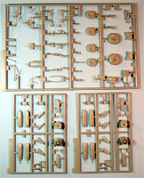
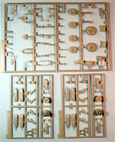
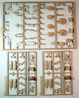

{kind=link}
 

{kind=link}
{kind=link}
Click on the above images to see larger pictures
Dragon Master Series 1/48 Ho 229B Nachtjager
Kit #5511
MSRP $29.98 USD
Images and text Copyright � 2004 by Matt Swan
Developmental History
A summer afternoon, 1931, three teenage boys � Walter, Reimar and Wolfram � toss their just finished model airplane into the wind and it sails gracefully across a sun dapple lawn. Their model was unlike any model flown by other young boys at the time, it had no tail plane or conventional profile but was an all wing glider of their own design. This is where it began, the root of the Horten Ho-229 all-wing fighter aircraft.
By 1936 the brothers were officers in the Luftwaffe and all three had become pilots. When Walter encountered British Spitfires he was quick to realize that more would be needed than the conventional Bf-109. Walter and his brothers formed an unofficial unit �Sonder-Kommando 3� as a private venture to continue the development of a jet powered all-wing fighter and design work began in earnest. Both Walter and Reimar had experience flying Bf-109s while Wolfram, the third brother was shot down over Dunkerque flying a Heinkel He-111. The surviving brothers continued their work at Gottingen. The wing was designed around a conventional tubular steel framework and a plywood skin. The chord of the wing center section increased sufficiently to enable pilot and power plants to be housed entirely within the wing itself without any drastic increase of thickness/chord ratio. There were no vertical surfaces, this combined with its thin frontal area made it highly resistant to Radar, an unexpected benefit. Construction of the prototype Horten IX V2 version began in 1943 with specifications to include two BMW 003 A turbojets, carry a 1000 Kg bomb load 1000 Kilometers at a speed of 1000 KPH. This is what was known as the 1000�-design concept. The 229 was also fitted with an ejection seat and painted with Radar absorbing paint. The Horten brothers had developed a special revetment for their Ho IX, made of glue, soot, and charcoal powder, making this already furtive machine practically undetectable with radar.
The planned installation of the BMW 003 turbojet engines in the Ho IX V1 prototype was deemed impractical, and it was decided to install a pair of Jumo 004 engines in the second prototype (Ho IX V2). Lateral and longitudinal control was provided by elevons, which, together with plain flaps, occupied the trailing edges of the outer wing panels. Spoiler flaps extended across most of the wing center section immediately aft of the main wheel wheels. Spoilers located near the wingtips just aft of the main spar achieved directional control. The out of proportion nose landing gear comes from a Heinkel He 177 heavy bomber. The first flight of the V2 occurred in February 1945 at Oranienburg, take off required less than 450 meters and handling was superb. It later crashed on landing when one of the two engines failed. In spite of having only 2 hours flying time, production was ordered to begin immediately at the Gotha plant and the official designation was changed to Go-229. Seven more prototypes were ordered, plus 20 production fighters.
Gotha's first production prototype for the Go 229A single-seat fighter-bomber series was given the designation Go 229 V3. V4 and V5 were to be the prototypes for the Go 229B all-weather fighter, and V-6 was to be a second A-series prototype with MK 103 cannon in place of MK 108s. V7 was to be a prototype for a two-seat training version. This two-seat trainer could also have been the basis for the night fighter, as was the case with the Me-262B. The Go 229B version was a planned variant with surviving drawings showing a general configuration. The planned night fighter would carry a radar operator�s seat and any available radar equipment. To accommodate these changes the center section was totally redesigned and the nose was sharply extended forward as compared to the day fighter version.
All through the spring of 1945, work proceeded at Friedrichsroda on these prototypes. However, late in April, the Friedrichsroda plant was finally occupied by American troops and development came to an abrupt end. At that time, the Go 229 V3 prototype was being prepared for flight-testing, and the V4 and V6 prototypes were in final assembly. Component manufacture for the 20 pre-production Go 229A-0 fighter bombers was well advanced, and various component parts were found strewn about the factory. One of those machines is now located at the Smithsonian Museum in Washington D.C..
As World War Two wound down the Horten brothers did not wait for the arrival of the Americans, and as many of their compatriots, it is in Argentina that they would continue to develop their flying wing. Although they had been geniuses in the conception of airplanes, they had none the less been members of the Nazi party. They went on to design unorthodox gliders, the Horten XV "Urubu" in particular and a giant transport glider the IAME I.A. 28, but only one of these machines was ever built.
Reimar Horten died in 1994. As for his brother Walter, his life ended in December 1998 in Baden-Baden. The Horten brothers' Ho 229 was a furtive jet propelled flying wing, operational some decades before the F-117 "stealth" and B-2 bomber. They were indeed the true masters of the flying wing design.
The Kit

Click on the above images to see larger pictures
Dragon has produced two different kits of the Ho-229, the �A� day fighter and the �B� night fighter. These kits do share some primary pieces such as the wings and landing gear but are very different overall. Where as the �A� kit offered complete Jumo engines and open gun bays in addition to removable wings and exposed tubular framework, the �B� version is all buttoned up. I image it would be possible to combine the two kits for a open model of the night fighter.
Inside the box we have several plastic bags of parts, all molded in light gray plastic. The clear parts are bagged separately to prevent shipping damage. The clear parts (8) are of good quality with lightly raised panel lines but the cockpit glass is molded as a single piece making it very difficult for the modeler to pose the �front office� open. We do get individual clear lenses for the wingtips and a variety of little fittings for odd details. The wings are obviously from the �A� kit with the pin slots molded into the alignment tabs and are packaged separately from the rest of the kit. In the rest of the sprues we get boxed in landing gear bays with lots of nice strut detail, a fairly well done cockpit and inlet/outlet blanks for the engines. All the gray pieces display finely engraved panel lines as we have come to expect from Dragon. I did not find any sink marks on the parts nor any injector pin markings anywhere that would cause a problem. One the smaller parts the mold seam lines were fine and can be easily dealt with by running the edge of a razor knife across them. I did not notice any flash on any of the parts and everything has a very crisp look to it. All in all, we have 107 pieces in light gray plastic.
We�re not done yet, there are a few more little doo-dads such as this nice little sheet of photo etched pieces. The kit includes a small fret of photo-etched pieces that covers the radar operator�s station, the nose antennae and a few other exterior detail pieces. There are nine PE parts. This brings us to a grand total of 124 pieces in the base kit.
Decals and Instructions
The kit instructions consist of a large four panel foldout printed front and back giving us eight total panels. It provides a couple of paragraphs of real fine print historical background on the aircraft, which begins by misspelling Reimar�s name but otherwise, does an adequate job. This information is repeated in six different languages. One panel is devoted to a complete, numbered parts breakdown, which is nice for quickly locating pieces during construction. There is a color reference chart cross-referencing colors for Gunze Sangyo Aqueous paints, Gunze Sangyo Mr. Colour paints and by Italeri paint numbers. There is also reference for some of the RLM numbers.
Four panels are devoted to assembly instructions broken down over twelve exploded view steps. The quality of the exploded view drawings is good; the order of assembly looks to follow a logical pattern and is easily understood. One footnote to this is the front landing gear, many modelers will turn the nose or tail wheel (depending on kit) to add a sense of activity to the model, don�t do this on this kit or the wheel will not clear the surrounding structure and there is no mention of this on the instructions. The last panel is the general painting guide and decal placement instructions.
Speaking of decals, we only get markings for one fictitious aircraft. The decals provide an extensive set of walkway markings, several service stencils and basic national markings. As with most contemporary Luftwaffe kits, the Swastikas are missing entirely, not even two-piece decals that could be assembled so you will need to turn to the spares box or aftermarket Luftwaffe sheets to complete the craft markings. While construction has not begun on this kit yet, I have built the day fighter version from Dragon and found that the decals were nice and thin and responded well to setting solutions but they did have a tendency to silver so care must be taken to assure that you have a good, glossy surface prior to applying the decals. Color density looks good and print registry is good.
Accessories
We�re not done yet, lets take a look at some of the accessories offered for this kit. Cutting Edge makes a mask set for this kit but I don�t feel it�s really necessary. I�ll spend that modeling dollar on masks for more complex canopies that we have here. I think some masking tape cut into strips will suffice. Eduard did a small set of brass intended for the day fighter that could be adapted for this kit if you were really determined however at the time of this writing that set is out-of-production. Both Aires and Engines and Things make Jumo 004 turbojet engine kits that could be adapted to this if you cared to open the engine compartment, the Aires kit, while very expensive is definitely a superior piece. And finally, Reheat has a set of brass available for this kit that also covers the day fighter. This is not an �Either/Or� but a �Both�. This is not exactly a cheap set of brass costing $21.75 but it appears to be very comprehensive and since I have both kits I coughed up some more modeling cash for it.
To the right obviously is a shot of the Reheat set, it includes two piece dashboards for both kits but no instrument faces for them. The instructions that come with this detail kit tell you to use the Reheat instrument decals purchased separately. This could be a problem as those decals are not currently available (fortunately I have a set in the stash).
It is a very nicely done set and seems to be well worth the money. It includes slide tracks for the backs of both seats, replacement attachment tabs for the open panels on the �A� model, seatbelts for both kits which is a very nice add-on and a lot of other cool little items. One item that took me a few minutes to figure out was the two large, square panels with circle openings in the center. Those are paint masks for the tires to apply the white lettering that is prominent in many historical photos � a nice touch indeed. For the �A� model there are replacement gun blast deflectors and for the �B� model there is a replacement rear antennae piece. Also, for both kits are nicely detailed rudder pedals. Really what we are looking at here is about a ten-dollar investment in each kit for detail items and, for the most part, they are very visible improvements that will make your kit an even more interesting piece of artwork.
Conclusions
One thing you can say for the Germans during World War Two, they came up with a lot of cool technology. It would seem reasonable that any collection of Luftwaffe aircraft would have a representation of the wing in it and this kit (or the �A�) is the one to have. Tooling and detail is very nice, directions are clear and to the point. Decals are good with a slight tendency for silvering. The worst point of this kit in my opinion is the single piece canopy compounded by the lack of any aftermarket canopy to help the modeler to open the cockpit. It�s not an excessively expensive model kit and will make an admirable piece built strictly out-of-the-box or can be dressed up with some limited aftermarket items. I highly recommend the kit for building and collecting.